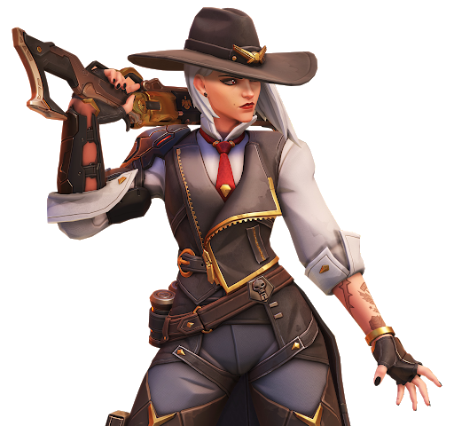
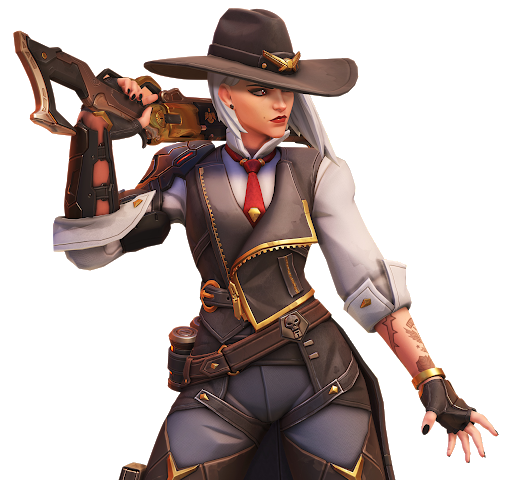

Hvað er leikurinn um?
Overwatch er team-based, fyrstu persónu, fjölspilunarskyttu, sem þróuð er og gefin út af Blizzard Entertainment. Lýst sem "Heroshooter" Overwatch úthlutar leikmönnum í tvö lið af sex, þar sem hver leikmaður velur úr yfir 30 persónum, þekktur sem „hetjur“, hver með sinn einstaka leikstíl sem skiptist í þrjú almenn hlutverk sem passa við tilgang þeirra. Leikmenn í teymi vinna saman að því að tryggja og verja stjórnunarstaði á korti eða fylgjast með farmi yfir kortið á takmörkuðum tíma. Leikmenn fá "Cosmetics" verðlaun sem hafa ekki áhrif á leik, svo sem persónuskinn og sigurgáfur, þegar þeir spila leikinn. Leikurinn var upphaflega settur af stað með eingöngu frjálslegur leikur, en samkeppnisröðun, ýmsar "arcade" leikstillingar og netvafri sem hægt er að aðlaga leikmann var bætt við eftir útgáfu. Að auki hefur Blizzard bætt við nýjum persónum, kortum og leikjamáta eftir útgáfu, allt án endurgjalds, en eini viðbótarkostnaðurinn við leikmenn eru valfrjálsir búningskassar til að vinna sér inn cosmetics. Það var gefið út fyrir PlayStation 4, Xbox One og Windows í maí 2016 og Nintendo Switch í október 2019. Overwatch varð til í kjölfar ákvörðunar Blizzard um að hætta við gegnheill fjölspilunarhlutverk á netinu Titan árið 2013, verkefni sem hafði verið í þróun í um það bil sjö ár. Þó að flestir aðrir sem fengu verkefni voru fluttir til annarra deilda innan Blizzard, var um 40 manna teymi, undir forystu leikstjórans Jeff Kaplan, falið að koma með nýtt hugtak fyrir leik á nokkrum mánuðum. Eftir smá hugarflug komu þeir að hugmyndinni um hetjuhóp sem byggir á skyttu og byggir á velgengni leikja eins og Team Fortress 2 og fjölbardaga á netinu. Þeir byrjuðu með eignir sem voru þróaðar fyrir Titan til að sýna fram á sönnun á hugmyndinni og voru grænlitaðar til að byggja upp allan leikinn, fyrsta nýja hugverkið sem Blizzard hafði þróað síðan StarCraft
Overwatch var ekki þróað með neinni hollustu gagnvart esports og einbeitti sér fyrst og fremst að því að „byggja upp frábæran samkeppnisleik“, að sögn Morhaime, þó þeir viðurkenndu að leikurinn hefði möguleika sem esports leikur með innri prófun. Þrátt fyrir að Blizzard hafi náð árangri með því að skuldbinda sig í sambandi við þróun Starcraft II, höfðu þeir komist að því að „það er hættulegt að vera of fastur í því að flytja of snemma á lífsleiðinni,“ samkvæmt Kaplan í stað þess að sjá hvernig samfélagið þróaðist með tímanum. eins og þeir sáu frá Hearthstone. Kaplan fullyrti að þrátt fyrir að esports væri ekki hönnunarmarkmið, þá væru þeir með og ætluðu að hafa möguleika fyrir leikinn til að styðja við samkeppnisfélagið. Þetta innihélt kynningu á samkeppnisham leiksins nokkrum mánuðum eftir upphaf leiksins eftir að hafa séð hvernig leikmenn tóku í átt að Overwatch; Blizzard sá stigastigið sem þeir notuðu sem leið fyrir hæfa leikmenn til að ná háum röðum eins og skipuleggjendur esport liða tóku eftir. Dan Szymborski skrifaði fyrir ESPN fullyrti að Overwatch væri í næsta stóra íþrótt fyrir að hafa nægilega öðruvísi útlit og leikstíl frá rótgrónum esportsleikjum eins og Counter-Strike: Global Offensive og Call of Duty, nægu fjölbreytni í kortum og persónum og sterkum stuðningi frá Blizzard til að viðhalda leiknum í langan tíma. Bryant Francis skrifaði fyrir Gamasutra og benti á hraðann og stutta viðureignartíma Overwatch gera leikinn mjög hagstæðan fyrir áhorf og styðja enn frekar leikinn sem aðstoðarheiti.
 
